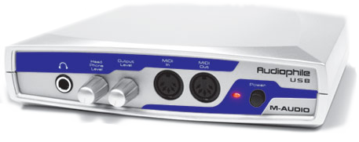
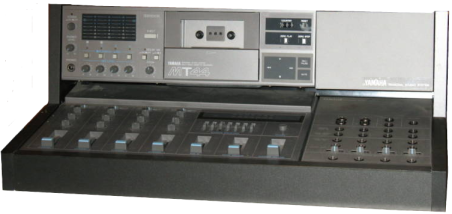
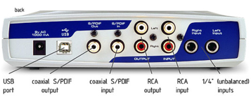
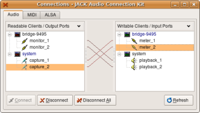
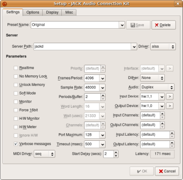

Using the M-Audio Audiophile USB Digital Audio Interface with Linux
Posted: Sep 07, 2008 10:09;
Last Modified: Nov 01, 2014 15:11
Keywords:
This describes how to get the M-Audio Audiophile USB Digital Audio Interface working with Linux/ALSA. It has been updated (2014-11-01) to reflect recent discoveries and now seems to work well.
Contents
Introduction
 Many of my courses deal with sounds of speech, and I am increasingly looking to supplement my course materials with additional digital video and audio material.
The University of Lethbridge, like most universities, I imagine, is well equipped with computer labs and IT personnel who are able to assist faculty and students with production of this kind of material. But I am looking for something that will allow me both to experiment without committing to the time involved for arranging studio and personnel time, and something that will allow me to respond quickly to opportunities that arise in the course of the year or moments of pedagogical inspiration. The University also has lots of computer labs, after all, but most faculty have a computer on their desk anyway.
 Since I was an avid home recording hobbyist in my teens and twenties, I had most of the most useful hardware in a closet: a decent microphone (necessary), and a mixer and patchbay (optional, though not if you want to do quality-sounding work); and the various cables (RCA, ¼ inch, MIDI, etc.) that make things cheaper and easier to set up. My mixer and patchbay were refugees from an old 1980s Yamaha MM30/MT44 Multitrack home studio (see image). Any old mixer will probably do, and I imagine you might be able to get some cheap ones on the internet. Having a mixer makes life easier in the sense that you have more control over the volume, stereo position, and quality of the audio signal before it gets to the computer. Certainly to begin, however, you can work without one, plugging your microphone directly into the card that acts as an interface between you and your computers.
M-Audio Audiophile USB Digital Audio Interface
The one thing I needed, of course was a way of connecting my microphone and mixer to the computer. I was in a music store on the weekend looking for some supplies, and I found a cheap used M-Audio Audiophile USB Digital Audio Interface (DAI) for sale. While you can buy microphones, record and cassette players, and MIDI cables that all convert a single input directly to USB for recording, a more general DAI like the Audiophile USB allows you to do more. With this, I’ll be able to convert cassettes of accents I have for my class on World Englishes to audio form as well, for example. The M-Audio was an extremely popular DAI, so there are likely thousands of used ones floating around.
A quick search on my cell phone found a page that described how to get the interface working and suggested that it is reasonably well supported in Linux. So I took a flutter. When I got home, I installed the audio software from Ubuntu Studio (a full-featured home studio suite, that is, of course, free). And used some hobby time getting things set up. All in all, it took me about 5 hours, including writing up this description of what I did.
The M-Audio Audiophile USB works with Linux due to some heroic efforts by a couple of people, most particularly Thibault Le Meur, who wrote the kernel documentation. These people have ferreted out and developed patches for the various inconsistencies in the device’s use of the USB protocols. The instructions for getting it working, however, are not always that easy to follow, so I thought I’d collect what I found and write down what worked for me.
Process
Getting the M-Audio Audiophile USB to work with Linux involves two discrete steps:
- arranging for the device to be recognised by ALSA (the sound driver that controls how your sound cards, including the Audiophile USB, work with your computer.
- arranging for the device to be recognised by JACK, the “audio connection kit” that allows alls the various studio software (recording programs, eq programs, meters, etc), to work together under Linux.
A third step, which isn’t applicable to my current project, involves getting the MIDI (Musical Instrument Digital Interface) input to work with digital instruments like synthesizers and drum machines. Since I’m at the moment only interested in recording relatively high quality spoken work and analogue feeds from cassettes and records, I haven’t tried it to see if the discussion below gets the MIDI working as well.
Getting the M-Audio Audiophile USB recognised by ALSA
As the kernel documentation indicates, the M-Audio Audiophile USB works partially with current versions of ALSA right out of the box. If have the right modules installed (and you almost certainly do, as USB sound is something I suspect all distributions support), ALSA will recognise your device as soon as you plug it in and turn it on.
So if you have headphones plugged in and have set the card to be the choice for playback (either using whatever utility your desktop uses for letting you set Sound preferences [in Ubuntu: System > Preferences > Sound Preferences], or by giving the hardware address explicitly to a program via the command line or configuration utility), you will be able to hear audio files sent to it.
The problem, however, is that you won’t be able to record anything—or at least anything meaningful. Due to a technical problem, the details of which thankfully don’t have to concern us, audio inputs to the device are recorded as white noise by ALSA if you use the default setting (If you are interested in the problem or planning to do development using the M-Audio Audiophile USB, you can read about the details of the issue in the kernel documentation).
The solution, developed by Thibault Le Meur and others, and recorded in the kernel documentation, is to reload the ALSA USB module with some device specific instructions:
- Turn off your M-Audio Audiophile USB sound card
- At the command line, remove the usb module:
sudo modprobe -r snd-usb-audio - Reinsert the module with explicit information about Audiophile’s location and setup, e.g.
sudo modprobe snd-usb-audio device_setup=0x01- Note: I used to specify both the index value
index=0and a different device_setup=0x09, but I found that the index wasn’t necessary with only one USB and that 0×01 worked way better than 0×09—in fact it answers the questions about noisiness in the comments below. - Note the different possibilities are:
- device_setup=0×01 (this is the one I use now)
- 16bits 48kHz mode with Di disabled
- Ai,Ao,Do can be used at the same time
- hw:1,0 is not available in capture mode
- hw:1,2 is not available
- device_setup=0×11
- 16bits 48kHz mode with Di enabled
- Ai,Ao,Di,Do can be used at the same time
- hw:1,0 is available in capture mode
- hw:1,2 is not available
- device_setup=0×09 (This is the one I originally recommended, but it creates a lot of background noise).
- 24bits 48kHz mode with Di disabled
- Ai,Ao,Do can be used at the same time
- hw:1,0 is not available in capture mode
- hw:1,2 is not available
- device_setup=0×19
- 24bits 48kHz mode with Di enabled
- 3 ports from {Ai,Ao,Di,Do} can be used at the same time
- hw:1,0 is available in capture mode and an active digital source must be connected to Di
- hw:1,2 is not available
- device_setup=0×0D or 0×10
- 24bits 96kHz mode
- Di is enabled by default for this mode but does not need to be connected to an active source
- Only 1 port from {Ai,Ao,Di,Do} can be used at the same time
- hw:1,0 is available in captured mode
- hw:1,2 is not available
- device_setup=0×01 (this is the one I use now)
- Note: I used to specify both the index value
- Turn your M-Audio Audiophile USB sound card back on.
 You are now able to record and playback audio files. You can test it out by plugging a microphone into the one of the two ¼” (unbalanced) input plugs on the right hand side of the back and making a recording from the command line using arecord; if you have a mixer, plug your microphone(s) into the mixer and connect the mixer’s audio out/line out plug to the Audiophile’s RCA Input jacks (second from the right when you are looking at the back):
arecord -D hw:1,1 -c2 -d 10 -t raw -r48000 -fS24_3BE test.raw
(this command uses the following options: -D hw1:1,1, the likely hardware address of your Audiophile USB card; -c2, two-channel recording [required for this card]; -d 10 duration of recording in seconds [default is infinite and is stopped by sending a break signal to the program]; -t raw, a .raw file type; -r48000, sampling rate; -fS24_3BE, number and order of bits).
You can then use aplay to play the recording back
aplay -t raw -r48000 -fS24_3BE test.raw
(the above command will output to your default sound card [i.e. probably the one that drives your speakers]; if you want to hear it in the headphones through your Audiophile, add -D hw:1,0 to the command).
Getting the M-Audio Audiophile USB recognised by JACK
update: I’m not sure the following is necessary any more. I was able to record well within Audacity without going to this step.
Command line recording is not a particularly user-friendly way of working, though knowing how to do it has its uses. For daily work, we are going to want to get the sound card working with the many excellent studio programs available for Linux, all of which (or at least all the most serious of which) work with the connection utility JACK. The fact that your Audiophile is recognised by ALSA, unfortunately, doesn’t seem to mean that it is recognised by JACK (actually your card does seem to be recognised by JACK without modification if you use the default module settings for snd-usb-audio; but it seems no longer to be recognised automatically by JACK or by the GNOME sound preferences manager after you add the device-specific options.
To get it recognised by JACK, you need to modify the JACK settings. You do this using jackctl (also known as qjackctl). While you can work from the command line with jackctl, Ubuntu Studio comes with a graphic version (Applications > Sound & Video > JACK Control).
- Once JACK Control is open, choose the “Setup” button;
- In Setup click on > beside “Input Device”;
- Choose the device that matches the
hw:address you used above witharecord: probably hw:1,1 USB Audio #1 - Close the setup and start (or restart if you had already started) JACK.
 Open up another JACK device (e.g. Ardour, the sound recording program, or even Meterbridge, the sound meter), and see if you are getting an audio signal from your microphone through your Audiophile USB sound card. If things are working, the audio will be available from system/capture 1 or capture 2 (if you used a microphone directly) or system/capture 1 and capture 2 (if you used a mixer); if these inputs are connected to something in the “Connection” button on the Jack Control, you should be able to record audio.  If they or JACK are not working, you may need to play with some settings. I found, for example, that I basically was unable to record anything at under 1024 frames/period, and I got the best results by setting the frames/period to its maximum value of 4096. Unfortunately, this brings with it the cost of a very high latency (the time between a signal being triggered and its reception at the computer end): 171 msec. Many people, in contrast, seem to be working with latencies of <10 or even <5 msecs.
Since others appear to be able to get reliable functioning with much lower frames/period (and lower latency), I assume I still need to play with the various JACK settings and perhaps even some of the hardware connections. For the specific type of projects I have in mind at the moment, however—making single voice, spoken word recordings of sounds and words for my classes and converting tapes and records I have used in classes in the past to digital format—I suspect this is a relatively minor issue. I would appreciate any tips, however!
Examples
My first examples, recorded with a good mike, the mixer mentioned above, but otherwise unprocessed and recorded with my computer fan roaring in the background are available here: http://people.uleth.ca/~daniel.odonnell/Teaching/english-3450a-the-pronunciation-of-old-english
Problems
In addition to the latency issues mentioned above, I’m aware of/suspect there may be some additional issues.
- I’m not sure how the Audiophile USB card, or the special device specific instructions required to set the module up for it will affect other USB sound cards I use, particularly the USB headset I use for audio conferencing.
- Setting the JACK input to the Audiophile USB card looks like it may disable your ability to use other inputs in Jack without changing things back: I did a quick test with Hydrogen (a drum machine), for example, and it looks like I need to change the input back to get it to record in Ardour (though I’m not 100% certain this is true, since none of my spoken word requirements—at the moment!—require a drum track or other instrumentation).

Comment [13]
Febs (Thu May 7, 2009 (11:45:36)) [PermLink]: Hello and thank you for the guide. I stumbled across it searching for info about the topic because I wanted to know if that would be a right thing to buy. But… what I’m really interested into is getting the MIDI-in working. So if you get the chance of testing it… please post it ;) I would be really thankful for that! :)
Pablo (Sun Jan 10, 2010 (09:10:25)) [PermLink]: Thank you for the guide.
As for the latency issue, you will improve this if you select the realtime option and, of course, decrease the period size. You user will need some privileges. See FAQ in jackaudio.org.
@ Febs. I can’t speak by my own experience as I don’t own one of these but please read the document Paul mentions. In short, yes.Daniele (Sat Feb 27, 2010 (11:25:42)) [PermLink]: Hello, thank for this great guide. However, also following these tips, I still obtain white noise from the capture device when I try to record with Ardour or Rosegarden. What do I mistake? Doing cat /proc/asound/cards my audiophile usb is shown to be at the index 2, so I reload the snd-usb-audio with index=2 and device_setup=0×09 parameters. Then I select the hw:2,1 input device from the qjackctl setup window and I try to record…but I only obtain white noise… Any idea?
Thank you very much in advance.dan (Sun Feb 28, 2010 (11:25:14)) [PermLink]: Hi Danielle
I’ve been having the same problem with the latest couple of upgrades of Ubuntu and haven’t had a chance to figure out what is wrong. I hope to look, but it won’t be until the summer.
Will you let me know if you manage to solve things? I wish I could be more helpful.
Daniele (Fri Sep 10, 2010 (07:35:21)) [PermLink]: UPDATE. I have a built-in ATI sound card on my laptop, hence the ati drivers was required. but, as stated in my last post here, with this drivers loaded my Audiophile just did not work. For study purposes, I built a custom kernel without recompiling restricted-modules, and my built-in ati sound card hasn’t been recognized. Then I tried again to load the snd-usb-audio module with the Audiophile-specific parameters, and it works!! I think that there was some conflicts between ati drivers and Audiophile…
dan (Mon Sep 13, 2010 (15:59:50)) [PermLink]: I’m glad this is working. For me, on a couple of different machines, it just started working (including MIDI) out of the box once I installed Lucid.
Savantas (Thu Sep 23, 2010 (14:47:17)) [PermLink]: Hi Daniel,
One small question… I have the same problem as some of the other people here. Playback works fine, however, capture doesn’t. I presume this is because the capture channel is muted by default. Normally, one would change this by running alsamixer. But in this case the sound card (as apparently is typical for usb sound cards) has no mixer interface and thus alsamixer shows nothing for the audiophile. So I was wandering how you managed to circumvent this issue.
Thanks in advance!
(btw. I have Ubuntu 9.10 – Karmic Koala installed)Dan (Wed Sep 29, 2010 (15:22:52)) [PermLink]: Savantas,
I’m afraid I don’t know the answer. The first time I did it, MIDI didn’t work and audio did after all the tweaking. This time MIDI worked out the box… and I thought audio did, but now I don’t remember if I actually tested it. I’ll try tonight.
dan (Sun Oct 17, 2010 (00:33:34)) [PermLink]: Oh oh. Savantas, it looks like you are right. Need to see what can be done.
Jonas (Wed Nov 3, 2010 (14:11:00)) [PermLink]: Hi Dan,
Great article! Helped me a lot.
I have a problem similar to Savantas’ – but my input level is very, very high, so I get a distorted and noisy sound. For some reason it fixes it self sometimes when I try restarting jack a couple of times with different buffer sizes and bitrates.
Have you figured out how to access the mixer?
farman ali (Mon Dec 24, 2018 (23:59:14)) [PermLink]: i cant find driver for audiopile usb intrerface
pleas help mei for use this deviceDomingo (Tue Nov 12, 2019 (17:12:55)) [PermLink]: Hi everyone!
Many years later. I happen to try for some time to make my M-Audio Audiophile USB work, because it has a nice sharp sound and don’t like the idea of getting rid of it.
I use arch linux but same problem with Ubuntu. I can playback, but capture gives white noise as well. I’m surprised that it worked for others in the past! Could somebody guide me a bit? I’m using an old Macbook Air, already tried disabling some internal card modules but no results.Domingo (Sun Nov 17, 2019 (15:00:22)) [PermLink]: I had the same problem. No input capture. At the end it was just a problem with pulseaudio taking over badly. After disabling pulseaudio and wiring directly to Jack it work (remember to erase the alsa config file, ie. /etc/asound.conf or home/user/.asoundrc)